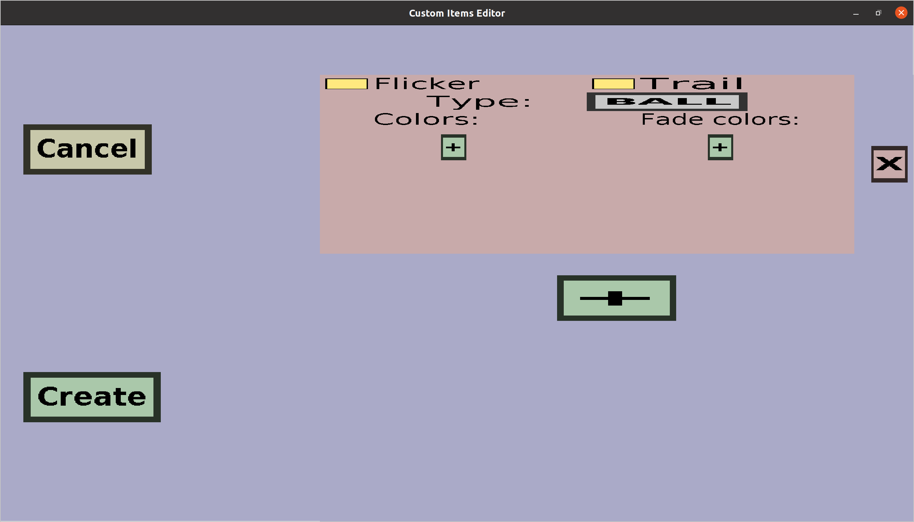

The firework projectile effect menu can be used to edit or create
firework projectile effects. These projectile effects will create
fireworks at the position of the projectile. The menu should look
like this:

-
Clicking the Cancel button will take you back to the menu
you came from, without adding a new firework projectile effect (if you
were creating a new projectile effect) and without keeping any changes
you made here (if you were editing an existing effect).
-
If you are creating a new firework projectile effect, clicking the
Create button will add the effect and then take you back to
the menu you came from.
-
If you are editing an existing firework projectile effect, clicking the
Apply button will take you back to the menu you came from, and
keep the changes you made here.
The right side of the page is used to configure the firework effects.
You need at least 1 firework effect, but you can add many more if you
want. If you make more, they will all be displayed at the same time.
Every firework effect is represented by an 'orange' box (in the
example above, there is only 1). You can add more by clicking the big
green + button. You can remove boxes/firework effects by
clicking their X button on the right. Every firework effect
has the following properties:
-
Flicker: whether the firework effect should have the
flicker/twinkle effect.
-
Trail: whether the firework effect should have the trail
effect.
-
Type: the type/shape of the firework effect. Click on the
button on the right of Type: to change it. The text on the
button shows the currently selected type.
-
Colors: the colors that the firework effect will show right
after the explosion. All these colors will be shown at the same time.
Use the green + button to add colors. Every color consists of
a red, green, and blue value. Each of these values must be at least
0 and at most 255. The higher the red value, the more 'red' the
firework effect will be. The same holds for green and blue. For
instance (Red=255, Green=0, Blue=0) denotes the color red and
(Red=255, Green=0, Blue=200) denotes the color pink. (Because
pink is a combination of red and blue.) You can use a site like
this
to easily design colors.
-
Fade colors: the colors that the firework effect will show
a while after the explosion. All the fade colors will be shown at
the same time, but they will be shown after the regular colors
are (mostly) gone. The configuration of fade colors is similar to
the configuration of regular colors.